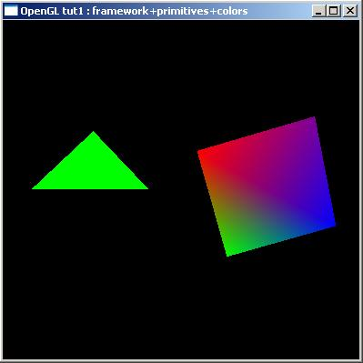
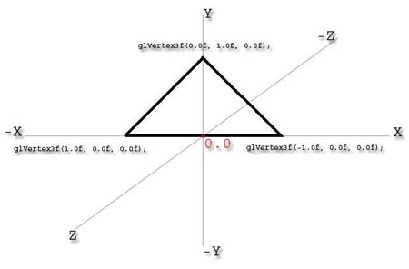
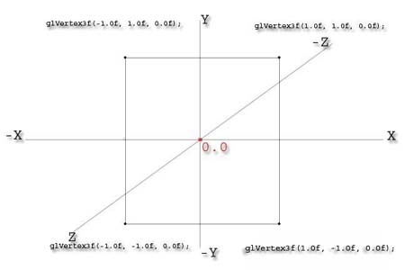

| OpenGL - osnove
Avtor: Rabely
Objavljeno: 22.07.2003, ob 08:37:01.
V tem članku, ki je spisan 100% za začetnike boste malo pobliže spoznali API za delo z grafiko, OpenGL. Vse bo napisano in preizkušeno v Visual C++ 6.0. Da boste sledili vsemu, pričakujem da znate programski jezik C++ in veste nekaj malega o programiranju z Win32 API. Od Win32 le najosnovnejše, dovolj bo da znate spisati prazen programček, ki se zažene samo zato da ga zaprete oz. da vsaj veste kako deluje en program v Windows - ih.
V tem članki boste spoznali, kako spišete prvi osnovni OpenGL program, v katerega bomo zrisali trikotnik in kvadrat. Nato jih bomo še obarvali in zavrteli.
Zgledalo bo takole:

Preden začnemo programirati, morate poskrbeti da imate vključene naslednje LIB - e:
opengl32.lib, glu32.lib, glaux.lib
Z naslednjimi vrsticami bomo vključili potrebne headre za vse LIB - e, ki jih bomo uporabili.
#include <windows.h>
#include <gl/gl.h>
#include <gl/glu.h>
#include <gl/glaux.h>
|
Naslednje, kar moramo storiti, deklaracija spremenljivk, ki jih bomo uporabili. Prva je g_HDC, to je globalna spremenljivka za Device Context(od zdaj naprej DC). Kaj je DC že morate vedeti(Win32!!). Druga je angle, tipa float. Uporabili jo bomo za kot pri funkciji za rotacijo.
HDC g_HDC; //GDI DC
float angle; //kot
|
V funkciji Init() bomo shranili nastavite za OpenGL. V tem primeru omogočili mehko prelivanje barv, nastavili barvo za odzadje na črno in omogočili globinski medpomnilnik(depth buffer).
void Init()
{
glShadeModel(GL_SMOOTH);
//barve se lepo prelivajo
glClearColor(0.0f, 0.0f, 0.0f, 1.0f);
//RGBA - rdeča, zelena, modra, alpha. Vse vrednosti so 0, torej je barva
črna
glEnable(GL_DEPTH_TEST);
//omogočimo globinski pomnilnik in ga testiramo
}
|
Naslednja funkcija, DrawGLScene(). Tukaj bomo risali trikotnike in kvadrate, jim določili barvo... itd. Ampak zaenkrat bomo to pustili še prazno, risali bomo noter, ko bomo spoznali kako deluje OpenGL program. No, skoraj prazno. Na začetku počistimo barvni in globinski medpomnilnik in resitiramo modelview matrico. Na koncu funckije kličemo funkcijo glSwapBuffers() ki zamenja sprednji medpomnilnik(front buffer) in zadnji medpomnilnik(back buffer), da dobimo lepo animirano sceno.
void DrawGLScene()
{
glClear(GL_COLOR_BUFFER_BIT | GL_DEPTH_BUFFER_BIT);
//počistimo barvni in globinski medpomnilnik
glLoadIdentity();
//resetiramo modelview matrico
//tukaj vmes bomo risali zadeve
SwapBuffers(g_HDC);
//zamenjamo sprednji in zadnji medpomnilnik
}
|
Naslednji del kode opiše, izbere in nastavi pixel format. V funkciji SetupPixelFotmat() najprej izberemo format, ki podpira OpenGL in dobule buffering, RGBA, nastavimo 32 - bitni barvni način, itd. Za več jasnosti berite komentarje ob vsaki vrstici. Naslednji korak je klic funkcije ChoosePixelFormat(). Ko je pixel format izbran ga nastavimo z SetPixelFormat().
void SetupPixelFormat( HDC hDC )
//funkcija nastavi pixel format v device context
{
int nPixelFormat;
static PIXELFORMATDESCRIPTOR pfd = {
sizeof(PIXELFORMATDESCRIPTOR),
//velikost strukture
1,
//verzija, vedno mora biti
nastavljena na 1
PFD_DRAW_TO_WINDOW |
//podpira okna,
PFD_SUPPORT_OPENGL |
//OGL,
PFD_DOUBLEBUFFER,
//dobule buffering,
PFD_TYPE_RGBA,
//RGBA.
32,
//32 bitni barvni način
0, 0, 0, 0, 0, 0,
//barvni
biti neuporabljeni
0,
//ni alpha buffer-ja
0,
//ni shift bitov
0,
//ni accumulation buffer-ja
0, 0, 0, 0,
//ni accumulation bitov
16,
//16 bitni z-buffer
(to je depth buffer)
0,
//ni stencil buffer-ja
0,
//ni auxiliary buffer-ja
PFD_MAIN_PLANE,
//glavna plast
0,
//rezervirano
0, 0, 0 };
//layer-mask ignorirano
nPixelFormat = ChoosePixelFormat(hDC, &pfd);
//izbere najbolje ujemajoči pixel format
SetPixelFormat(hDC, nPixelFormat, &pfd);
//nastavi pixel format v device context
}
|
Zdaj smo pri message-switcher -ju. To v glavnem morate vedeti kaj je. Mi bomo le dodali nekaj vrstic kode.
LRESULT CALLBACK WndProc(HWND hwnd, UINT message, WPARAM wParam,
LPARAM lParam)
{
static HGLRC hRC;
//rendering context(od sedaj naprej RC)
static HDC hDC;
//device context
int width, height;
//višina in dolžina scene
switch(message)
{
|
Prvi »case« - WM_CREATE(saj veste kaj to pomeni). Najprej dobimo trenutni DC, nato ga shranimo v globalno spremenljivko za DC. Nato pokličemo funkcijo ki smo jo ustvarili: SetupPixelFormat(). In nazadnje ustvarimo ročico do RC - ja in ga nastavimo za privzetega.
case WM_CREATE:
hDC = GetDC(hwnd);
//dobimo DC
g_HDC = hDC;
//ga nastavimo v globalno spremenljivko za DC
SetupPixelFormat(hDC);
//nastavimo pixel format
hRC = wglCreateContext(hDC);
//ustvarimo ročico do RC - ja
wglMakeCurrent(hDC,
hRC); //aktivira RC
return 0;
break;
|
In če program zapremo? Sprosti RC in ga pobriše ter pošlje sporočilo, da je uporabnik zaprl program.
case WM_CLOSE:
wglMakeCurrent(hDC,
NULL); //sprosti RC
wglDeleteContext(hRC);
//pobriše RC
PostQuitMessage(0);
return 0;
break;
|
Naslednje se zgodi vsaj enkrat, to je na začetku, ali pa ob spreminjanju velikosti okna. Naprej vzpostavimo višino in širino(ne okna, scene). Nato poskrbimo da višina ne more biti negativna in resetiramo pogled. Nastavimo projekcijsko matrico, jo resetiramo, izračunamo razmirje perspektive okna, nastavimo modelview matrico ter jo resetiramo. Ufff :)
case WM_SIZE:
// posdobitev okna
height = HIWORD(lParam);
width = LOWORD(lParam);
//višina&širina scene
if(height == 0)
height
= 1;
glViewport(0, 0,
width, height);
//nastavi trenutni pogled
glMatrixMode(GL_PROJECTION);
//nastavimo projekcijsko matrico
glLoadIdentity();
//…in jo resetiramo
gluPerspective(45.0f,
(GLfloat)width/(GLfloat)height, 1.0f, 1000.0f); //izračunamo perspektivo
glMatrixMode(GL_MODELVIEW);
//nastavimo modelview matrico
glLoadIdentity();
//…in jo resetiramo
return 0;
break;
default:
break;
}
return (DefWindowProc(hwnd, message, wParam, lParam));
}
|
Zdaj bom prilepil malo večji kos kode, ki ga ne bom posebej opisoval, saj ga morate poznati(Win32).
int WINAPI WinMain(HINSTANCE hInstance, HINSTANCE hPrevInstance,
LPSTR lpCmdLine, int nShowCmd)
{
WNDCLASSEX windowClass;
HWND hwnd;
MSG
msg;
bool done;
//nastavljeno na FALSE, dokler se program izvaja - ko dobi vrednost TRUE je programa konec.
windowClass.cbSize
= sizeof(WNDCLASSEX);
windowClass.style
= CS_HREDRAW | CS_VREDRAW;
windowClass.lpfnWndProc
= WndProc;
windowClass.cbClsExtra
= 0;
windowClass.cbWndExtra
= 0;
windowClass.hInstance
= hInstance;
windowClass.hIcon
= LoadIcon(NULL,
IDI_APPLICATION);
windowClass.hCursor
= LoadCursor(NULL, IDC_ARROW);
windowClass.hbrBackground =
NULL;
windowClass.lpszMenuName =
NULL;
windowClass.lpszClassName =
"OpenGL";
windowClass.hIconSm
= LoadIcon(NULL, IDI_WINLOGO);
if (!RegisterClassEx(&windowClass))
return 0;
hwnd = CreateWindowEx( NULL,
"OpenGL",
"OpenGL tut1 : framework+primitives+colors",
WS_OVERLAPPEDWINDOW | WS_VISIBLE
|
WS_SYSMENU | WS_CLIPCHILDREN |
WS_CLIPSIBLINGS,
100, 100,
400, 400,
NULL,
NULL,
hInstance,
NULL);
if (!hwnd)
return 0;
Init();
//funckija Init()
ShowWindow(hwnd, SW_SHOW);
UpdateWindow(hwnd);
done = false;
|
Tudi ta del morate poznati, nov je le klic funkcije DrawGLScene(). Torej, dokler se program izvaja, se kliče funkcija DrawGLScene(), ki vseskozi rendira našo sceno.
while (!done)
//dokler done ni true…
{
PeekMessage(&msg, hwnd, NULL,
NULL, PM_REMOVE); //preverja sporočila
if (msg.message == WM_QUIT)
//ko dobi program sporočilo za izhod…
no saj veste kaj sledi :)
done = true;
else
//če ne..
{
DrawGLScene();
//rendiraj, rendiraj in še enkrat rendiraj
TranslateMessage(&msg);
DispatchMessage(&msg);
}
}
return msg.wParam;
}
|
Juhej, Framework je ustvarjen. Naredite EXE, program bo deloval. Le videli ne boste ravno veliko(le črno okno). Ampak prvi programi so zabavni tudi če so roza barve :D.
Sedaj bomo kodo dodajali SAMO v DrawGLScene().
Prve štiri vrstice kode že poznamo. Naprej je pa novo.
Če je kot večji od 360 stopnj, ponastavi kot na 0.0.
void DrawGLScene()
{
glClear(GL_COLOR_BUFFER_BIT | GL_DEPTH_BUFFER_BIT);
glLoadIdentity();
if(angle >=360.0f)
//ko se objekt enkrat zavrti okrog svoje osi je ponastavljen na začetno pozicijo
angle = 0.0f;
|
Z glTranslatef() nastavimo pozicijo objekta v prostoru(x, y, z). V tem primeru bomo narisali objekt -1.5 piksla na X osi, 0.0 pikslov na Y osi in 7 pikslov po negativni Z osi.
Z glRotatef() bomo določili vrtenje po Y osi. Funkcija kot prvi parameter jemlje kot. V tem primeru je kot spremenljivka angle, kateri bomo pozneje določili naraščajočo vrednost. Torej se bo kot povečeval in objekt se bo vseskozi vrtel. Naslednji tri parametri so x, y in z. Mi smo pri Y vpisali 1.0f, torej se bo objekt vrtel po Y osi.
glTranslatef(-1.5f, 0.0f, -7.0f);
//premakne objekt 1.5 piksla po negativni X osi in 7 pikslov po negativni Z osi
glRotatef(angle, 0.0f, 1.0f, 0.0f); //rotira oz. vrti objekt po Y osi
|
Sedaj ko smo določili pozicijo objekta in rotacijo, lahko objekt narišemo. Začnemo z glBegin(), kjer vstavimo parameter GL_TRIANGLES, kar pomeni da bomo risali trikotnike. Najprej določimo barvo trikotnika - zelena(glColor3f() jemlje parametre rdeča, zelena, modra(red, green, blue oz. RGB)). Nato z glVertex3f(), ki jemlje parametre x, y in z, določili oglišča, ki so v primeru trikotnika(da, uganili ste =)) 3. Za nejasnosti glejte sliko 2.

glBegin(GL_TRIANGLES); //začni risati
trikotnik
glColor3f(0.0f, 1.0f, 0.0f);
//barva - zelena
glVertex3f(0.0f, 1.0f, 0.0f);
//oglišče zgoraj(sredina)
glVertex3f(1.0f, 0.0f, 0.0f);
//oglišče spodaj levo
glVertex3f(-1.0f, 0.0f, 0.0f);
//oglišče spodaj desno
glEnd();
|
Resetiramo še modelview matrico, novi objekt pomaknemo v desno oz. po pozitivni X osi za 1.5 piksla, zarotiramo kvadrat po X osi IN Y osi in že smo pri risanju kvadrata. Kvadrat(spet ste najbrž uganili) ima 4 oglišča. Torej bomo z glVertex3f() označili 4 oglišča. Logično, ne?
Razlika je tudi, da v tem primeru za vsako oglišče določimo novo barvo; rezultat so 4 barve na kvadratu ki se zavoljo funkcije v glShadeModel(), ki je nastavljena na GL_SMOOTH lepo prelivajo.

glLoadIdentity();
//ponastavimo modelview matrico
glTranslatef(1.5f, 0.0f, -7.0f); //določimo pozicijo
glRotatef(angle, 1.0f, 0.0f, 1.0f); //zavrtimo
glBegin(GL_QUADS);
//začnemo z risanjem kvadrata
glColor3f(1.0f, 0.0f, 0.0f);
//barva - rdeča
glVertex3f(-1.0f, 1.0f, 0.0f);
//oglišče zgoraj levo
glColor3f(0.0f, 1.0f, 0.0f);
//barva - zelena
glVertex3f(-1.0f, -1.0f, 0.0f);
//oglišče spodaj levo
glColor3f(0.0f, 0.0f, 1.0f);
//barva - modra
glVertex3f(1.0f, -1.0f, 0.0f);
//oglišče spodaj desno
glColor3f(0.5f, 0.0f, 0.6f);
//barva - malo rdeče in malo več modre(najbolj
je še podobna vijoločni)
glVertex3f(1.0f, 1.0f, 0.0f);
//oglišče zgoraj desno
glEnd();
|
Tako! Še zadnjih nekaj vrstic kode in ste zmagali. V tem delu spremenljivki angle dodajate po 0.4 piksla v neskočnost. Oziroma do uporabnikovega preklica programa. Ali pa, ker že programiramo v Windowsih, dokler se program ne sesuje.
angle += 0.4f;
//povečuje kot za 0.4° (večja bo vrednost, hitreje se bosta lika vrtela)
SwapBuffers(g_HDC); //zamenja sprednji in zadnji medpomnilnik
}
|
Tutoriala je konec, upam da ste razumeli vse in uživali ob branju. Nikjer pa ne piše, da se ne smete malo poigrati z pravkar pridobljenim znanjem. Če imate dovolj globinske predstave poskusite narediti kocko(glBegin(GL_QUADS) …. glEnd()). Za vsako nejasnost/komentar/željo po še kakšnem tovrstnim člankom me kontaktirajte na forumu ali mi pišite (aljosa@…).
Izvorno kodo najdete tukaj. 
|